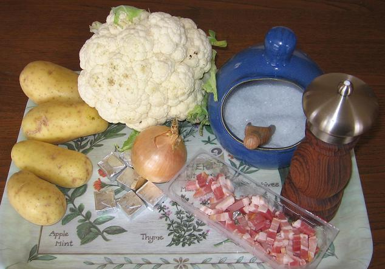
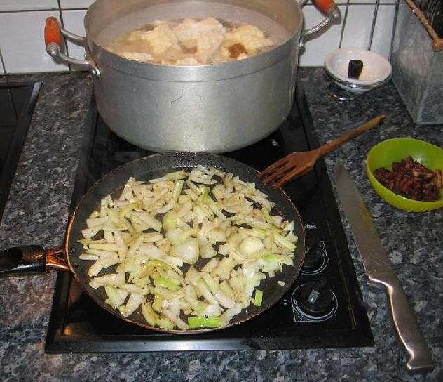

Recette n° 156 : Blumenkohl- und Kartoffel-Cremesuppe mit Speckstückchen und Zwiebel
Note
préliminaire :
Cette recette est donnée en
allemand car elle a été composée initialement
à l'attention d'amis radio-amateurs allemands et croate (Kurt,
Lothar, Ivan) ; pour les non-germanophones, une traduction en
français est donnée un peu plus loin.

Zutaten
(für 6 Portionen)
- 1 Blumenkohl, geschnitten
- 4 Kartoffeln, geschält und geschnitten
- 1 Zwiebel, gehackt
- Speckstückchen, geräuchert, 100 Gramm
- Hühner Kraftbouillon, 6 Würfel (60 Gramm)
- 2 Liter Wasser
- Salz und Pfeffer, Sahne, eventuell

Zubereitung
- Blumenkohl, Kartoffeln und Hühner Kraftbouillon in kaltes Wasser
werfen ; dieises Wasser zum Sieden bringen ; kochen lassen.
- die Speckstückchen anbraten, und die Zwiebel im Speckfett
andünsten
- angebratene Speckstückchen und angedünstete Swiebel mit den
kochenden Gemüsen vermischen
- alles mindestens 15 Minuten köcheln lassen
- den Herd ausschalten
- ein Viertel der Gemüse* sieben und aufsparen, den Rest
verquirlen, dann alles zusammen vermischen
- je nach Geschmack salzen und pfeffern (Achtung ! Das Hühner
Kraftbouillon bringt schon viel Salz)
- auf den Teller sofort** geben (mit Sahne für die Schlemmer, die
kein Problem mit Cholesterin haben...)
Bemerkungen
* um der Suppe eine bessere Textur geben, alles kann verquilt werden,
wenn man die Stückchen in Suppe nicht gern isst.
** diese Cremesuppe kann auch eingefroren und dann wiedererwärmt
werden.
Dieses Rezept wurde in Quiberon am 1. November 2007 zubereitet.
-----------------------------------------------------------------------------------------------------------------------
Traduction en français
Blumenkohl- und Kartoffel-Cremesuppe mit Speckstückchen und Zwiebel
Velouté de chou-fleur et de pommes de terre aux petits lardons
et aux oignons
Ingrédients
(pour 6 portions)
- 1 chou-fleur, débité
- 4 pommes de terre, épluchées et débitées
- 1 oignon, haché
- 100 g de petits lardons fumés
- 6 cubes de bouillon de poule
- 2 litres d'eau
- sel et poivre, crème fraîche, éventuellement
Préparation
- mettre le chou-fleur, les pommes de terre et les cubes de bouillon
dans l'eau froide ; porter cette eau à ébullition,
laisser cuire
- faire revenir les lardons, puis les oignons dans la graisse des
lardons
- les lardons et les oignons une fois revenus, les mélanger aux
légumes en cours de cuisson
- laisser cuire le tout au moins 15 mn
- arrêter la cuisinière
- égoutter un quart des légumes* et réserver ;
mixer le reste, ensuite mélanger le tout
- saler et poivrer selon goût (attention, le bouillon de poule a
déjà apporté beaucoup de sel !)
- servir aussitôt en assiettes** geben (avec de la crème
pour les gourmands qui n'ont pas de problème de
cholestérol...)
Bemerkungen
* pour donner à la soupe une meilleure texture, tout peut
être passé au mixer, si on ne mange pas volontiers des
"petits morceaux" dans la soupe.
** ce velouté peut aussi être congelé puis
réchauffé plus tard
Cette recette a té préparée le 1er novembre 2007
à Quiberon